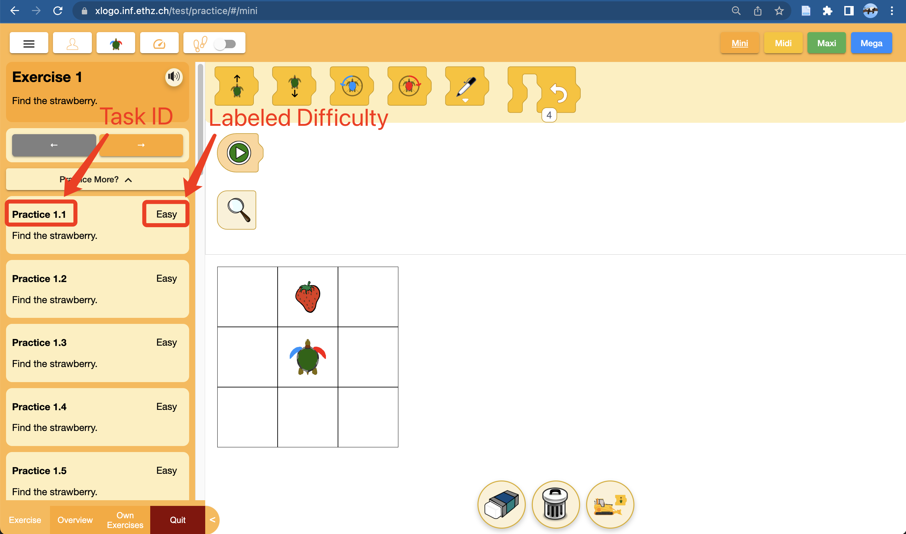

We have created 20-30 practice tasks for each exercise in XLogo-Mini. We would like to invite you to help us choose the best tasks for each exercise. Your expertise in this matter would be greatly valued. Please follow the steps outlined below to select the tasks.
Once you open the link, click on either "Practice More" or "Mehr üben?" to access all the practice tasks for each exercise. Review the tasks and proceed to step 2 to share your feedback with us via google sheet.
You are provided with a Google Sheet containing survey questions that need to be answered for each practice task. Each row in the sheet corresponds to a specific practice task, and there are 4 questions for each. Please select the appropriate answer for each question.
Here are the questions:
1. It would be convenient to keep two pages open side-by-side: the webpage which describes each task and the google sheet to enter the rating for the practice.